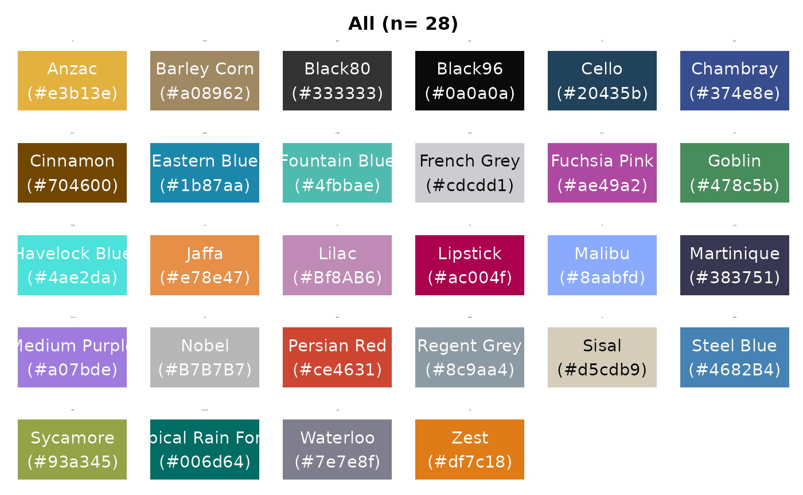
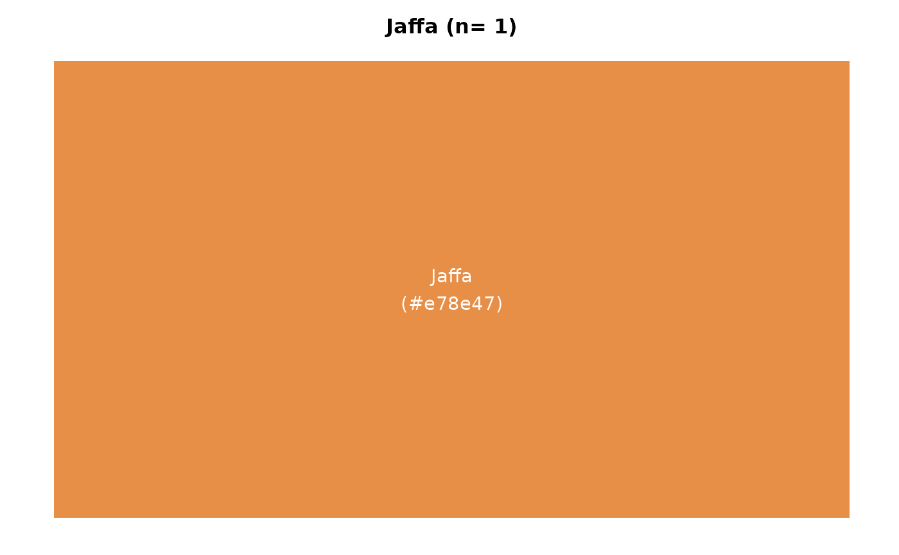

Mastering Colour Selection
Source:vignettes/articles/creating-colour-palettes.rmd
creating-colour-palettes.rmdThis document provides guidance on using the
colour_display(), colour_pal(), and
colour_prep() functions from an R package to create and
visualise colour palettes effectively.
Colour plays a crucial role in data visualisation. It not only makes
plots more aesthetically pleasing but also aids in communicating data
patterns and insights more effectively. The functions
colour_display(), colour_pal(), and
colour_prep() are designed to help users select and apply
colour palettes with ease.
colour_display()
The colour_display() function visualises colour options
from a specified palette. It integrates with colour_pal()
to fetch colour data and uses an internal helper function,
contrast_test(), to ensure text readability on coloured
bars.
# Example: Visualise the 'polUK' palette
colour_display("polUK")
# Example: Visualise an individual colour
colour_display("Jaffa")
# Example: Visualise all individual colours
colour_display("All")
# Example: View a sequential colour palette with a continuous scale
colour_display("seqGreen", 7, type = "continuous")
colour_pal()
The colour_pal() function generates colour palettes for
graphs. It supports sequential, diverging, categorical, and political
palettes, allowing users to retrieve individual colours or ranges of
colours based on the specified palette.
# Example: Return full categorical extended palette
colour_pal("catExtended")
#> [1] "#478c5b" "#374e8e" "#df7c18" "#ac004f" "#4fbbae" "#ce4631" "#006d64"
#> [8] "#1b87aa" "#e3b13e" "#ae49a2" "#383751" "#704600" "#93a345" "#7e7e8f"
#> [15] "#d5cdb9" "#a07bde" "#8aabfd" "#a08962"
# Example: Return an individual colour
colour_pal("Jaffa")
#> [1] "#e78e47"
# Example: Return a diverging palette with assigned categories
colour_pal("divBlueGreen", 5, c("Very Likely", "Likely", "Neutral", "Unlikely", "Very Unlikely"))
#> $`Very Likely`
#> [1] "#1b87aa"
#>
#> $Likely
#> [1] "#70a9c1"
#>
#> $Neutral
#> [1] "#c7c7c7"
#>
#> $Unlikely
#> [1] "#acb58a"
#>
#> $`Very Unlikely`
#> [1] "#93a345"
colour_prep()
colour_prep() prepares a colour palette for visualising
data by assigning colours to unique values across specified columns in a
data frame. It is particularly useful for creating consistent colour
mappings in visualisations.
# Example data frame
df <- data.frame(
Category1 = c("Scottish National Party (SNP)", "Labour", "Conservative", "Other"),
Category2 = c("An independent candidate", "Invalid_Party_Name", "Other", "Conservative")
)
# Prepare a colour palette for the unique values in Category1 and Category2
colour_palette <- colour_prep(df, c("Category1", "Category2"))
# Print the prepared colour palette
print(colour_palette)
#> $`An independent candidate`
#> [1] "#478c5b"
#>
#> $Conservative
#> [1] "#374e8e"
#>
#> $Invalid_Party_Name
#> [1] "#df7c18"
#>
#> $Labour
#> [1] "#ac004f"
#>
#> $Other
#> [1] "#4fbbae"
#>
#> $`Scottish National Party (SNP)`
#> [1] "#ce4631"